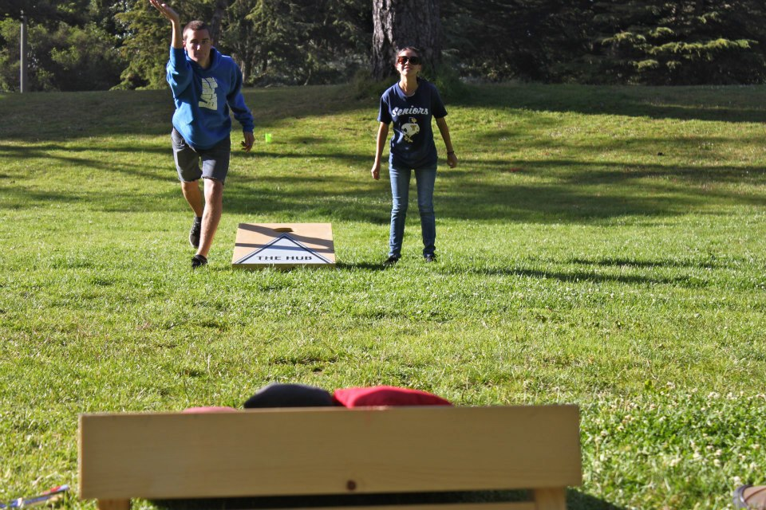

Rules of the Game
Cornhole Boards
- Placed on a flat surface 27 feet apart (front to front).
- The platform surface should be 2' x 4' standing 12" in the rear and 4"
in the front.
- A 6" hole, centered 9" from the back and 12" from either side.
Cornhole Bags
- There should be 8 bags, 4 bags of each color.
- Each bag should be 6 inches by 6 inches and have 1 pound of corn
inserted into each bag.
Point System
- 3 points for a cornhole bag that goes through the hole.
- 1 point for a cornhole bag that is on the playing surface.
- 1 point for a cornhole bag that is hanging into the hole.
- 1 point for a cornhole bag that is hanging off the edge but not touching the ground.
- 0 points for a cornhole bag that is on the playing surface, but also touching the ground.
- 0 points for a cornhole bag that is hanging off the front edge and is resting on a cornhole bag that is on the ground. (If you can remove the bag on the ground without the one on the board falling then a point is given.)
- The team with the highest round score, adds the difference of the two scores to their game score.
- The team who wins the round is given honors to throw first in the next round.
- If both cornhole teams have the same round score then the game score stays the same and honors stays with the team who had it the previous round.

Cornhole Fouls
- A cornhole players foot goes past the foot foul line. (front of the cornhole board)
- A Player goes out of turn.
- The throw the foul occurs on is voided. If the bag is on the board remove it.
Game Play
- In doubles play partners shall stand at opposite cornhole boards. In singles play both players will throw from the same board.
- Each cornhole team will have 4 bags of one color.
- All 8 cornhole bags begin at one end.
- A coin flip or rock/paper/scissors determines witch cornhole team has honors in round one.
- The team who has honors will begin play by throwing a cornhole bag at the opposite cornhole board.
- A cornhole player may throw from anywhere behind the front of the cornhole board they are throwing from.
- You must continue throwing each bag from the same side of the board as the first bag in any given round.
- Alternate throws between the two opponents until all 8 cornhole bags have been thrown.
- If a cornhole bag hits the ground then bounces up onto the board, remove that bag for it does not count.
- Count the points scored during the round. If no team has reached the 21 point mark start the next round until a team reaches 21. The team that scores the highest amount of points on the previous round will have honors